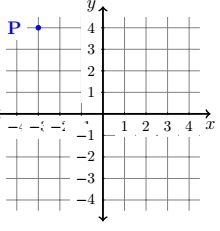
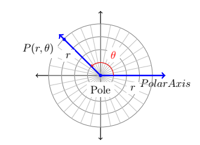
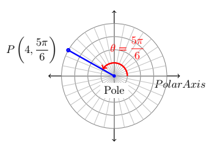
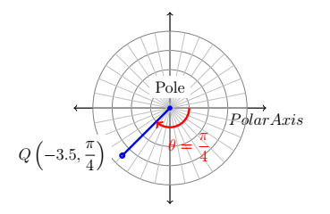
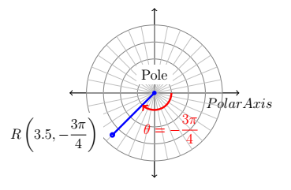

CH 8.4 – Polar Coordinates
Throughout your mathematical careers you've learned that Cartesian coordinates of a point in the plane as a means of assigning ordered pairs of numbers to points in the plane. The Cartesian coordinate plane is defined by using two number lines — one horizontal and one vertical — which intersect at right angles at a point we called the 'origin'. To plot a point, say \(P(-3,4)\), we start at the origin, travel horizontally to the left \(3\) units, then up \(4\) units. Alternatively, we could start at the origin, travel up \(4\) units, then to the left \(3\) units and arrive at the same location. For the most part, the 'motions' of the Cartesian system (over and up) describe a rectangle, and most points can be thought of as the corner diagonally across the rectangle from the origin. For this reason, the Cartesian coordinates of a point are often called 'rectangular' coordinates.

In this section, we introduce a new system for assigning coordinates to points in the plane — polar coordinates. We start with an origin point, called the pole, and a ray called the polar axis. We then locate a point \(P\) using two coordinates, \((r,\theta)\), where \(r\) represents a directed distance from the pole and \(\theta\) is a measure of rotation from the polar axis. Roughly speaking, the polar coordinates \((r,\theta)\) of a point measure 'how far out' the point is from the pole (that's \(r\)), and 'how far to rotate' from the polar axis, (that's \(\theta\)).

Example
Plot the following polar points:
- \(P\!\left(4,\, \dfrac{5\pi}{6}\right)\)
- \(Q\!\left(-3.5,\, \dfrac{\pi}{4}\right)\)
- \(R\!\left(3.5,\, -\dfrac{3\pi}{4}\right)\)
Solution
-
For example, if we wished to plot the point \(P\) with polar coordinates \(\left(4, \frac{5\pi}{6}\right)\), we'd start at the pole, move out along the polar axis \(4\) units, then rotate \(\frac{5\pi}{6}\) radians counter-clockwise. We may also visualize this process by thinking of the rotation first. To plot \(P\!\left(4,\frac{5\pi}{6}\right)\) this way, we rotate \(\frac{5\pi}{6}\) counter-clockwise from the polar axis, then move outwards from the pole \(4\) units. Essentially we are locating a point on the terminal side of \(\frac{5\pi}{6}\) which is \(4\) units away from the pole.

-
If \(r < 0\), we begin by moving in the opposite direction on the polar axis from the pole. For example, to plot \(Q\!\left(-3.5, \frac{\pi}{4}\right)\). Or if we interpret the angle first, we rotate \(\frac{\pi}{4}\) radians, then move back through the pole \(3.5\) units. Here we are locating a point \(3.5\) units away from the pole on the terminal side of \(\frac{5\pi}{4}\), not \(\frac{\pi}{4}\).

-
As you may have guessed, \(\theta < 0\) means the rotation away from the polar axis is clockwise instead of counter-clockwise. Hence, to plot \(R\!\left(3.5, -\frac{3\pi}{4}\right)\). From an 'angles first' approach, we rotate \(-\frac{3\pi}{4}\) then move out \(3.5\) units from the pole. We see that \(R\) is the point on the terminal side of \(\theta = -\frac{3\pi}{4}\) which is \(3.5\) units from the pole.

The points \(Q\) and \(R\) above are, in fact, the same point despite the fact that their polar coordinate representations are different. Unlike Cartesian coordinates where \((a,b)\) and \((c,d)\) represent the same point if and only if \(a=c\) and \(b=d\), a point can be represented by infinitely many polar coordinate pairs.
Next, we marry the polar coordinate system with the Cartesian (rectangular) coordinate system. To do so, we identify the pole and polar axis in the polar system to the origin and positive \(x\)-axis, respectively, in the rectangular system. We get the following result.
Conversion Between Rectangular and Polar Coordinates
Suppose \(P\) is represented in rectangular coordinates as \((x,y)\) and in polar coordinates as \((r,\theta)\). Then:
- \(x = r\cos(\theta)\) and \(y = r\sin(\theta)\)
- \(x^2 + y^2 = r^2\) and \(\tan(\theta) = \dfrac{y}{x}\) (provided \(x \neq 0\))
In the case \(r > 0\), the conversion above is an immediate consequence of a few previous properties along with the quotient identity \(\tan(\theta) = \frac{\sin(\theta)}{\cos(\theta)}\). If \(r < 0\), then we know an alternate representation for \((r,\theta)\) is \((-r, \theta + \pi)\). Since \(\cos(\theta + \pi) = -\cos(\theta)\) and \(\sin(\theta + \pi) = -\sin(\theta)\), applying the theorem to \((-r,\theta+\pi)\) gives \(x = (-r) \cos(\theta + \pi) = (-r)(-\cos(\theta)) = r\cos(\theta)\) and \(y = (-r) \sin(\theta + \pi) = (-r)(-\sin(\theta)) = r\sin(\theta)\). Moreover, \(x^2 + y^2 = (-r)^2 = r^2\), and \(\frac{y}{x} = \tan(\theta + \pi) = \tan(\theta)\), so the theorem is true in this case, too. The remaining case is \(r = 0\), in which case \((r,\theta) = (0,\theta)\) is the pole. Since the pole is identified with the origin \((0,0)\) in rectangular coordinates, the theorem in this case amounts to checking '\(0=0\).' The following example puts the above information to good use.
Example
Convert each point in rectangular coordinates given below into polar coordinates with \(r \geq 0\) and \(0 \leq \theta < 2\pi\). Use exact values if possible and round any approximate values to two decimal places. Check your answer by converting them back to rectangular coordinates.
- \(P\!\left(2,\,-2\sqrt{3}\right)\)
- \(Q(-3,-3)\)
- \(R(0,-3)\)
- \(S(-3,4)\)
Solution
Point 1: \(P\!\left(2,-2\sqrt{3}\right)\)
Even though we are not explicitly told to do so, we can avoid many common mistakes by taking the time to plot the points before we do any calculations. Plotting \(P\!\left(2,-2\sqrt{3}\right)\) shows that it lies in Quadrant IV. With \(x = 2\) and \(y = -2\sqrt{3}\), we get:
\[\begin{aligned} r^2 &= x^2 + y^2 \\ r^2 &= (2)^2 + \left(-2\sqrt{3}\right)^2 \\ r^2 &= 4 + 12 \\ r^2 &= 16 \\ r &= \pm\sqrt{16} \\ r &= \pm 4 \end{aligned}\]Since we are asked for \(r \geq 0\), we choose \(r = 4\). To find \(\theta\), we have that:
\[\tan(\theta) = \frac{y}{x} = \frac{-2\sqrt{3}}{2} = -\sqrt{3}\]This tells us \(\theta\) has a reference angle of \(\frac{\pi}{3}\), and since \(P\) lies in Quadrant IV, we know \(\theta\) is a Quadrant IV angle. We are asked to have \(0 \leq \theta < 2\pi\), so we choose \(\theta = \frac{5\pi}{3}\). Hence, our answer is \(\left(4, \frac{5\pi}{3}\right)\). To check, we convert \((r,\theta) = \left(4, \frac{5\pi}{3}\right)\) back to rectangular coordinates and we find \(x = r \cos(\theta) = 4 \cos\!\left(\frac{5\pi}{3}\right) = 4 \left(\frac{1}{2}\right) = 2\) and \(y = r \sin(\theta) = 4 \sin\!\left(\frac{5\pi}{3}\right) = 4 \left(-\frac{\sqrt{3}}{2}\right) = -2\sqrt{3}\), as required.
Point 2: \(Q(-3,-3)\)
The point \(Q(-3,-3)\) lies in Quadrant III. Using \(x = y = -3\), we get:
\[\begin{aligned} r^2 &= (-3)^2 + (-3)^2 \\ r^2 &= 18 \\ r &= \pm\sqrt{18} \\ r &= \pm 3\sqrt{2} \end{aligned}\]Since we are asked for \(r \geq 0\), we choose \(r = 3\sqrt{2}\). We find:
\[\tan(\theta) = \frac{-3}{-3} = 1\]which means \(\theta\) has a reference angle of \(\frac{\pi}{4}\). Since \(Q\) lies in Quadrant III, we choose \(\theta = \frac{5\pi}{4}\), which satisfies the requirement that \(0 \leq \theta < 2\pi\). Our final answer is \((r,\theta) = \left(3\sqrt{2}, \frac{5\pi}{4}\right)\). To check, we find \(x = r\cos(\theta) = (3\sqrt{2}) \cos\!\left(\frac{5\pi}{4}\right) = (3\sqrt{2})\!\left(-\frac{\sqrt{2}}{2}\right) = -3\) and \(y = r\sin(\theta) = (3\sqrt{2}) \sin\!\left(\frac{5\pi}{4}\right) = (3\sqrt{2})\!\left(-\frac{\sqrt{2}}{2}\right) = -3\), so we are done.
Point 3: \(R(0,-3)\)
The point \(R(0,-3)\) lies along the negative \(y\)-axis. While we could go through the usual computations to find the polar form of \(R\), in this case we can find the polar coordinates of \(R\) using the definition. Since the pole is identified with the origin, we can easily tell the point \(R\) is \(3\) units from the pole, which means in the polar representation \((r, \theta)\) of \(R\) we know \(r = \pm 3\). Since we require \(r \geq 0\), we choose \(r = 3\). Concerning \(\theta\), the angle \(\theta = \frac{3\pi}{2}\) satisfies \(0 \leq \theta < 2\pi\) with its terminal side along the negative \(y\)-axis, so our answer is \(\left(3, \frac{3\pi}{2}\right)\). To check, we note \(x = r \cos(\theta) = 3 \cos\!\left( \frac{3\pi}{2}\right) = (3)(0) = 0\) and \(y = r \sin(\theta) = 3 \sin\!\left( \frac{3\pi}{2}\right) = 3(-1) = -3\).
Point 4: \(S(-3,4)\)
The point \(S(-3,4)\) lies in Quadrant II. With \(x = -3\) and \(y = 4\), we get \(r^2 = (-3)^2 + (4)^2 = 25\) so \(r = \pm 5\). As usual, we choose \(r = 5 \geq 0\) and proceed to determine \(\theta\). We have \(\tan(\theta) = \frac{y}{x} = \frac{4}{-3} = -\frac{4}{3}\), and since this isn't the tangent of one the common angles, we resort to using the arctangent function. Since \(\theta\) lies in Quadrant II and must satisfy \(0 \leq \theta < 2\pi\), we choose \(\theta = \pi - \arctan\!\left(\frac{4}{3}\right)\) radians. Hence, our answer is \((r,\theta) = \left(5, \pi - \arctan\!\left(\frac{4}{3}\right)\right) \approx (5,\,2.21)\).
Now that we've had practice converting representations of points between the rectangular and polar coordinate systems, we now set about converting equations from one system to another. Just as we've used equations in \(x\) and \(y\) to represent relations in rectangular coordinates, equations in the variables \(r\) and \(\theta\) represent relations in polar coordinates. We convert equations between the two systems using the same equations as to convert rectangular to polar as the next examples illustrates.
Example
1. Convert each equation in rectangular coordinates into an equation in polar coordinates.
- \((x-3)^2 + y^2 = 9\)
- \(y = -x\)
- \(y = x^2\)
2. Convert each equation in polar coordinates into an equation in rectangular coordinates.
- \(r = -3\)
- \(\theta = \dfrac{4\pi}{3}\)
- \(r = 1 - \cos(\theta)\)
Solution
Part 1: Rectangular Coordinates to Polar Coordinates
One strategy to convert an equation from rectangular to polar coordinates is to replace every occurrence of \(x\) with \(r\cos(\theta)\) and every occurrence of \(y\) with \(r\sin(\theta)\) and use identities to simplify. This is the technique we employ below.
-
We start by substituting \(x = r\cos(\theta)\) and \(y = r\sin(\theta)\) into \((x-3)^2 + y^2 = 9\) and simplifying. With no real direction in which to proceed, we follow our mathematical instincts and see where they take us.
\[\begin{aligned} (r\cos(\theta) - 3)^2 + (r\sin(\theta))^2 &= 9 \\[4pt] r^2\cos^2(\theta) - 6r\cos(\theta) + 9 + r^2\sin^2(\theta) &= 9 \\[4pt] r^2\!\left(\cos^2(\theta) + \sin^2(\theta)\right) - 6r\cos(\theta) &= 0 \quad \text{Subtract 9 from both sides.} \\[4pt] r^2 - 6r\cos(\theta) &= 0 \quad \text{Since } \cos^2(\theta) + \sin^2(\theta) = 1 \\[4pt] r(r - 6\cos(\theta)) &= 0 \quad \text{Factor.} \end{aligned}\]We get \(r = 0\) or \(r = 6\cos(\theta)\). We should know that \((x-3)^2+y^2=9\) is a circle centered at \((3,0)\) with radius \(3\), we choose \(r = 6\cos(\theta)\) for our final answer.
-
Substituting \(x = r\cos(\theta)\) and \(y = r\sin(\theta)\) into \(y = -x\) gives:
\[r\cos(\theta) = -r\sin(\theta)\]Rearranging, we get:
\[\begin{aligned} r\cos(\theta) + r\sin(\theta) &= 0 \\ r(\cos(\theta) + \sin(\theta)) &= 0 \end{aligned}\]This gives \(r = 0\) or \(\cos(\theta) + \sin(\theta) = 0\). Solving the latter equation for \(\theta\), we get \(\theta = -\frac{\pi}{4} + \pi k\) for integers \(k\). As we did in the previous example, we take a step back and think geometrically. We know \(y = -x\) describes a line through the origin. As before, \(r = 0\) describes the origin, but nothing else. Consider the equation \(\theta = -\frac{\pi}{4}\). In this equation, the variable \(r\) is free, meaning it can assume any and all values including \(r = 0\). If we imagine plotting points \(\left(r, -\frac{\pi}{4}\right)\) for all conceivable values of \(r\) (positive, negative and zero), we are essentially drawing the line containing the terminal side of \(\theta = -\frac{\pi}{4}\) which is none other than \(y = -x\). Hence, we can take as our final answer \(\theta = -\frac{\pi}{4}\) here.
-
We substitute \(x = r\cos(\theta)\) and \(y = r\sin(\theta)\) into \(y = x^2\) and get:
\[\begin{aligned} r\sin(\theta) &= (r\cos(\theta))^2 \\ r^2\cos^2(\theta) - r\sin(\theta) &= 0 \\ r(r\cos^2(\theta) - \sin(\theta)) &= 0 \end{aligned}\]so that either \(r = 0\) or \(r\cos^2(\theta) = \sin(\theta)\). We can solve the latter equation for \(r\) by dividing both sides of the equation by \(\cos^2(\theta)\), but as a general rule, we never divide through by a quantity that may be \(0\). In this particular case, we are safe since if \(\cos^2(\theta) = 0\), then \(\cos(\theta) = 0\), and for the equation \(r\cos^2(\theta) = \sin(\theta)\) to hold, then \(\sin(\theta)\) would also have to be \(0\). Since there are no angles with both \(\cos(\theta) = 0\) and \(\sin(\theta) = 0\), we are not losing any information by dividing both sides of \(r\cos^2(\theta) = \sin(\theta)\) by \(\cos^2(\theta)\). Doing so, we get \(r = \frac{\sin(\theta)}{\cos^2(\theta)}\), or \(r = \sec(\theta)\tan(\theta)\). As before, the \(r = 0\) case is recovered in the solution \(r = \sec(\theta)\tan(\theta)\) (let \(\theta = 0\)), so we state the latter as our final answer.
Part 2: Polar Coordinates to Rectangular Coordinates
As a general rule, converting equations from polar to rectangular coordinates isn't as straightforward as the reverse process. We could solve \(r^2 = x^2 + y^2\) for \(r\) to get \(r = \pm\sqrt{x^2+y^2}\) and solving \(\tan(\theta) = \frac{y}{x}\) requires the arctangent function to get \(\theta = \arctan\!\left(\frac{y}{x}\right) + \pi k\) for integers \(k\). Neither of these expressions for \(r\) and \(\theta\) are especially user-friendly, so we opt for a second strategy — rearrange the given polar equation so that the expressions \(r^2 = x^2+y^2\), \(r\cos(\theta)=x\), \(r\sin(\theta)=y\) and/or \(\tan(\theta) = \frac{y}{x}\) present themselves.
-
Starting with \(r = -3\), we can square both sides to get \(r^2 = (-3)^2\) or \(r^2 = 9\). We may now substitute \(r^2 = x^2+y^2\) to get the equation \(x^2+y^2 = 9\). As we have seen, squaring an equation does not, in general, produce an equivalent equation. The concern here is that the equation \(r^2 = 9\) might be satisfied by more points than \(r = -3\). On the surface, this appears to be the case since \(r^2 = 9\) is equivalent to \(r = \pm 3\), not just \(r = -3\). However, any point with polar coordinates \((3,\theta)\) can be represented as \((-3,\theta + \pi)\), which means any point \((r,\theta)\) whose polar coordinates satisfy the relation \(r = \pm 3\) has an equivalent representation which satisfies \(r = -3\).
-
We take the tangent of both sides of the equation \(\theta = \frac{4\pi}{3}\) to get \(\tan(\theta) = \tan\!\left(\frac{4\pi}{3}\right) = \sqrt{3}\). Since \(\tan(\theta) = \frac{y}{x}\), we get \(\frac{y}{x} = \sqrt{3}\) or \(y = x\sqrt{3}\). Of course, we pause a moment to wonder if, geometrically, the equations \(\theta = \frac{4\pi}{3}\) and \(y = x\sqrt{3}\) generate the same set of points.
-
Once again, we need to manipulate \(r = 1 - \cos(\theta)\) a bit before using the conversion formulas. We could square both sides of this equation to obtain an \(r^2\) on the left hand side, but that does nothing helpful for the right hand side. Instead, we multiply both sides by \(r\) to obtain \(r^2 = r - r\cos(\theta)\). We now have an \(r^2\) and an \(r\cos(\theta)\) in the equation, which we can easily handle, but we also have another \(r\) to deal with. Rewriting the equation as \(r = r^2 + r\cos(\theta)\) and squaring both sides yields \(r^2 = \left(r^2 + r\cos(\theta)\right)^2\). Substituting \(r^2 = x^2 + y^2\) and \(r\cos(\theta) = x\) gives \(x^2 + y^2 = \left(x^2 + y^2 + x\right)^2\). Once again, we have performed some algebraic maneuvers which may have altered the set of points described by the original equation. First, we multiplied both sides by \(r\). This means that now \(r = 0\) is a viable solution to the equation. In the original equation, \(r = 1 - \cos(\theta)\), we see that \(\theta = 0\) gives \(r = 0\), so the multiplication by \(r\) doesn't introduce any new points. The squaring of both sides of this equation is also a reason to pause. Are there points with coordinates \((r,\theta)\) which satisfy \(r^2 = \left(r^2 + r\cos(\theta)\right)^2\) but do not satisfy \(r = r^2 + r\cos(\theta)\)? Suppose \(\left(r',\theta'\right)\) satisfies \(r^2 = \left(r^2 + r\cos(\theta)\right)^2\). Then \(r' = \pm\left((r')^2 + r'\cos(\theta')\right)\). If we have that \(r' = (r')^2 + r'\cos(\theta')\), we are done. What if \(r' = -\left((r')^2 + r'\cos(\theta')\right) = -(r')^2 - r'\cos(\theta')\)? We claim that the coordinates \((-r', \theta' + \pi)\), which determine the same point as \((r',\theta')\), satisfy \(r = r^2 + r\cos(\theta)\). We substitute \(r = -r'\) and \(\theta = \theta' + \pi\) into \(r = r^2 + r\cos(\theta)\) to see if we get a true statement.
\[\begin{aligned} -r' &= \left(-r'\right)^2 + \left(-r'\cos(\theta' + \pi)\right) \\[5pt] -\left(-(r')^2 - r'\cos(\theta')\right) &= (r')^2 - r'\cos(\theta' + \pi) \\[5pt] (r')^2 + r'\cos(\theta') &= (r')^2 - r'(-\cos(\theta')) \\[5pt] (r')^2 + r'\cos(\theta') &= (r')^2 + r'\cos(\theta') \end{aligned}\]Since both sides worked out to be equal, \((-r', \theta' + \pi)\) satisfies \(r = r^2 + r\cos(\theta)\) which means that any point \((r,\theta)\) which satisfies \(r^2 = \left(r^2 + r\cos(\theta)\right)^2\) has a representation which satisfies \(r = r^2 + r\cos(\theta)\), and we are done.
In practice, much of the pedantic verification of the equivalence of equations in the examples is left unsaid. Indeed, in most textbooks, squaring equations like \(r = -3\) to arrive at \(r^2 = 9\) happens without a second thought. Your instructor will ultimately decide how much, if any, justification is warranted. If you take anything away from the above examples, it should be that relatively nice things in rectangular coordinates, such as \(y = x^2\), can turn ugly in polar coordinates, and vice-versa. In the next section, we devote our attention to graphing equations like the ones given in this section on the Cartesian coordinate plane without converting back to rectangular coordinates. If nothing else, the question above shows the price we pay if we insist on always converting to back to the more familiar rectangular coordinate system.
Exercises
Exercises to be added at a later date.